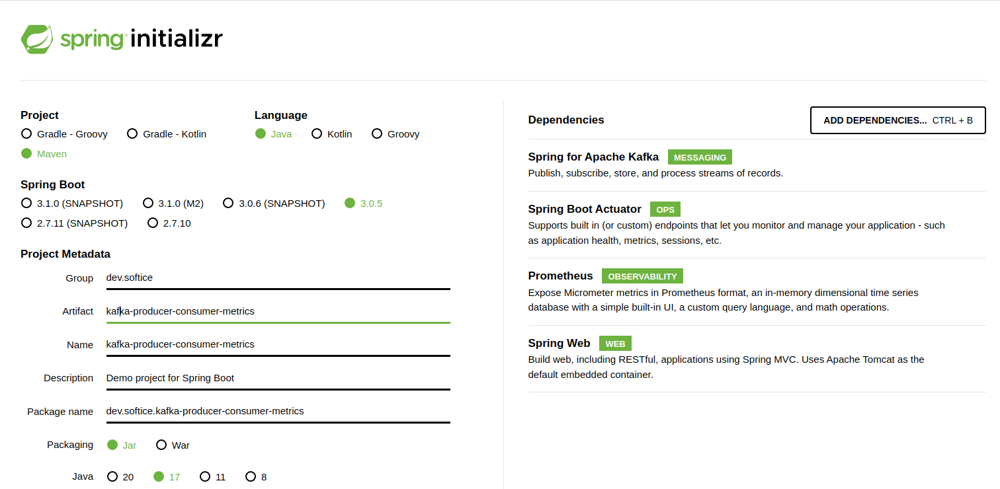
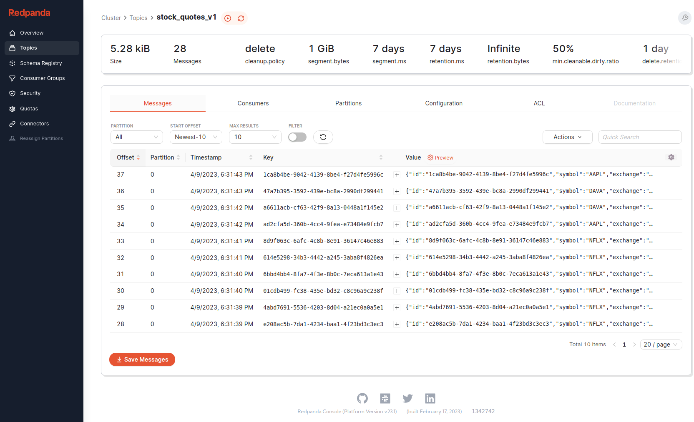
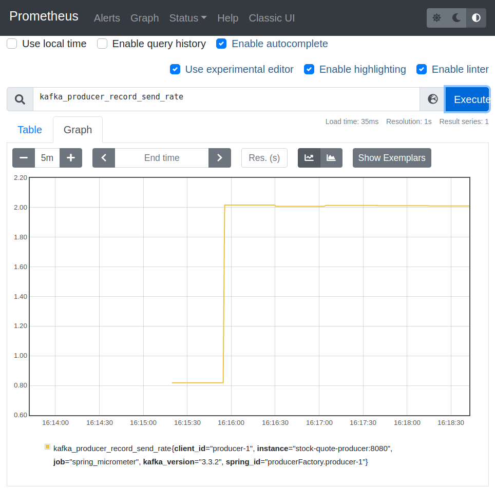
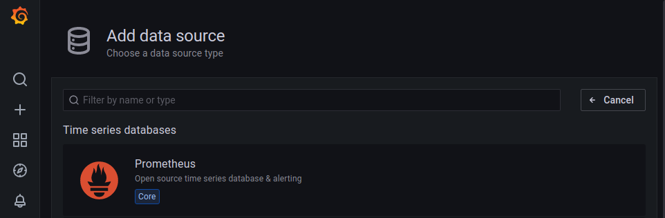
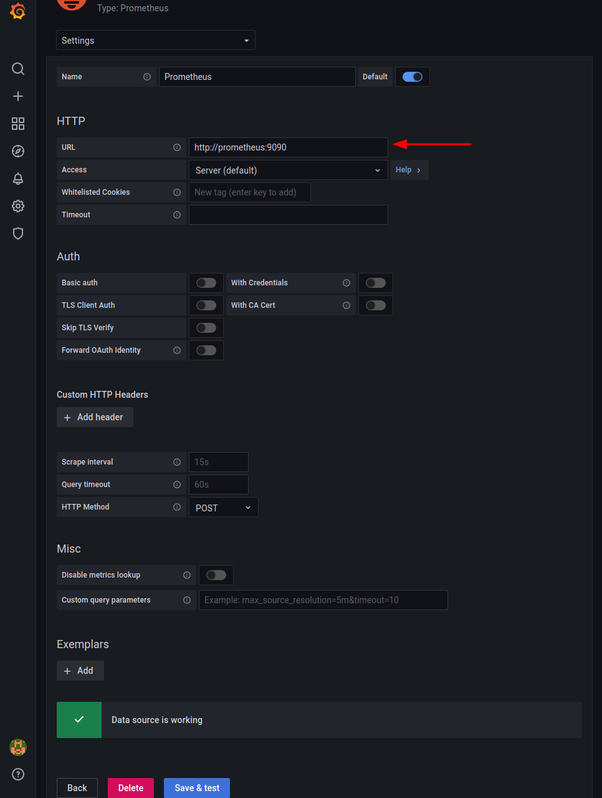
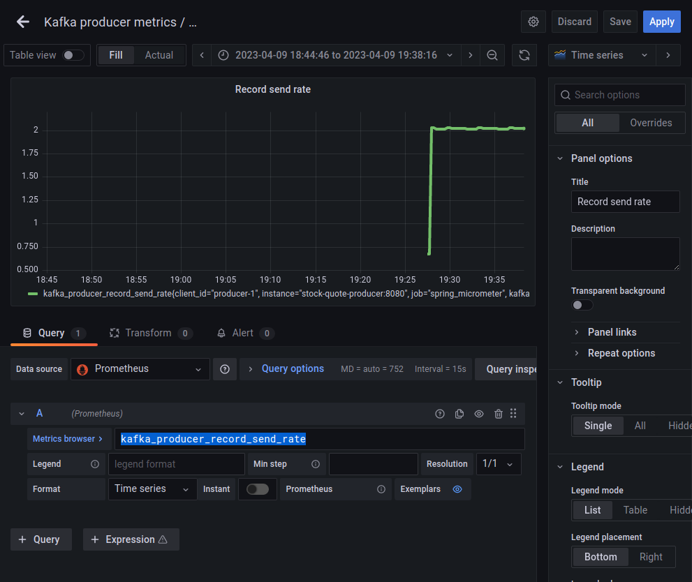
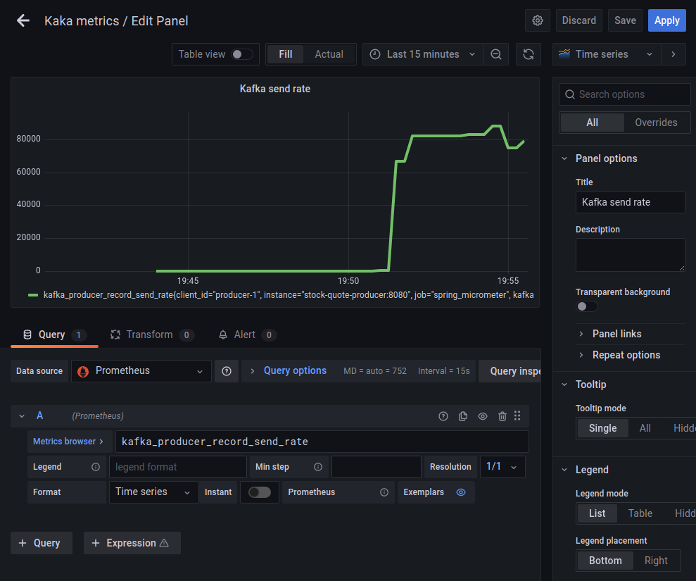

In this blog post we’re going to explore how to expose Apache kafka's producer and consumer metrics to Spring Boots's actuator, and then importing them into
prometheus and displaying them as a Grafana dashboard. Doing this will help us keep track of kafka’s producer and consumer performance and also will help
us to see the impact of specific producer or consumer configuration properties.
Creating a simple Kafka producer application with spring boot
Let’s go to https://start.spring.io/ and create a simple Spring boot project which will publish messages to Apache kafka.

Let’s also create a docker-compose.yaml file, where we’ll declare all the docker containers we’re going to run locally. For now we’ll need Zookeeper, Apache kafka,
and Redpanda console (for visualizing what’s inside our kafka).
Now let’s try to create our Kafka producer. First we need to think about what kind of messages we’re going to publish to kafka. In our example we’ll use
the so-called stock-quotes, which represent a price update for a given public company’s stock. We’ll use a StockQuote record for that:
Since we want to look at metrics, let also write a generator class which will publish messages quite frequently to kafka, so that we’ll have more data to look at.
If we’ll run our application, it should start publishing messages to kafka. We can check out the published messages in redpanda console:

Exposing the metrics to actuator
Now let’s try to expose the Kafka producer metrics to Spring Boot's actuator endpoint, so that we observe what’s the performance of our producer.
We’ll modify our kafka java configuration like this:
1
2
3
4
5
6
7
8
9
10
11
12
13
14
15
16
@Configuration(proxyBeanMethods=false)publicclassKafkaConfig{@BeanpublicProducerFactory<String,StockQuote>producerFactory(KafkaPropertiesproperties,MeterRegistrymeterRegistry){ProducerFactory<String,StockQuote>producerFactory=newDefaultKafkaProducerFactory<>(properties.buildProducerProperties());producerFactory.addListener(newMicrometerProducerListener<>(meterRegistry));//<--- expose metrics to actuator
returnproducerFactory;}@BeanpublicKafkaTemplate<String,StockQuote>kafkaTemplate(ProducerFactory<String,StockQuote>producerFactory){KafkaTemplate<String,StockQuote>kafkaTemplate=newKafkaTemplate<>(producerFactory);returnnewKafkaTemplate<>(producerFactory);}}
Also we’ve configured our spring boot app so that it exposes all actuator endpoints, like this
For example, kafka.producer.record.send.rate it’s an interesting one. Since our scheduler is configured like shown below, we expect the producer send rate to
be roughly equal to 2.
1
2
3
4
5
6
7
8
@ComponentpublicclassStockQuoteScheduler{//...
@Scheduled(fixedRate=500)//<--- 2 messages per second
publicvoidtick(){//...
}}
{"name":"kafka.producer.record.send.rate","description":"The average number of records sent per second.","measurements":[{"statistic":"VALUE","value":2.0084566596194504}],"availableTags":[{"tag":"spring.id","values":["producerFactory.producer-1"]},{"tag":"kafka.version","values":["3.3.2"]},{"tag":"client.id","values":["producer-1"]}]}
Exporting the metrics to Prometheus and Grafana
As we remember, when we’ve created the project we’ve added the following maven dependency:
Basically it provides exactly the same information as http://localhost:8080/actuator/metrics, the difference being
that it’s in an Prometheus-specific format.
We can now configure a Prometheus instance to poll this endpoint periodically. The idea is that Prometheus is a time-series database tailored specifically
for metrics. Whenever Prometheus will hit the http://localhost:8080/actuator/prometheus, it will store all the metrics
information and associate every metric with a timestamp. By doing that, we can observe how a specific metric evolves over time.
Let’s add Prometheus to our docker-compose.yaml file, like shown below:
1
2
3
4
5
6
7
8
9
10
11
12
version:'3'services:#Previously defined containers like zookeeper, kafka & redpanda#...#Prometheusprometheus:image:prom/prometheus:v2.28.1container_name:prometheusports:- "9090:9090"volumes:- ./prometheus/prometheus.yml:/etc/prometheus/prometheus.yml
The prometheus.yml file from above is a simple configuration file which looks like this:
What’s worth pointing out is that Prometheus will invoke the http://stock-quote-producer:8080/actuator/prometheus
endpoint periodically (every 35 seconds). The request timeout for a single call is 30 seconds.
Now the catch is that since we’ve run Prometheus as a docker container (which is isolated from our local machine), our application should be run also as a
docker container, so that Prometheus can call it. At the moment the above prometheus.yml expects our app to be running on http://stock-quote-producer:8080.
So we need now to create a docker image out of our spring boot app and use stock-quote-producer as the container name. Let’s do this.
Nothing fancy so far. We’ve just copied the target/kafka-producer-consumer-metrics-0.0.1-SNAPSHOT.jar file into a directory called evil and we’ve also
created a new group called evil, with a user named evil as well.
Now we’ll modify our docker-compose.yaml file once more so that it includes our spring boot application, like this:
1
2
3
4
5
6
7
8
9
10
11
12
13
14
15
16
17
version:'3'services:#Previously defined containers like zookeeper, kafka & redpanda#...stock-quote-producer:build:dockerfile:./infra/docker/Dockerfilecontext:"../../"container_name:stock-quote-producerports:- "8080:8080"environment:SPRING_KAFKA_PRODUCER_BOOTSTRAP_SERVERS:broker:29092restart:on-failuredepends_on:- broker- prometheus
Now if we’ll run the new docker-compose.yaml file, all of our metrics data should be stored in prometheus, and we should be able to check how specific metrics
evolve over time. To access the Prometheus dashboard, we just need to access the following endpoint: http://localhost:9090/.

Now Prometheus is a great tool to store metrics, but it doesn’t have fancy graph-plotting abilities. To fix that we can use Grafana
Configuring Grafana
In order to use Grafana, we’ll need to add yet another docker container to our docker-compose.yaml file, like shown below:
1
2
3
4
5
6
7
8
9
10
11
12
version:'3'services:#Previously defined containers like zookeeper, kafka & redpanda#...#Grafana dashboardgrafana:image:grafana/grafana:8.0.6container_name:grafanaports:- "3000:3000"depends_on:- prometheus
The Grafana will be accessible at http://localhost:3000/. The default credentials are admin for the username and admin for the password.
First, we’ll need to configure a Prometheus datasource.

Here we just need to specify the Prometheus's address, which in our case will be http://prometheus:9090/

Nice. Now let’s try to create a basic Grafana dashboard displaying the kafka_producer_record_send_rate metric, like shown below:

In order to see the maximum throughput of our spring boot app, let’s modify out StockQuoteScheduler like shown below, so that it doesn’t publish only 2
messages per second, but much more.
Now, if we’ll try to run our app in this configuration, we’ll see that our application produces about 80K messages per second.

Conclusion
In this blog post we saw how to expose Apache Kafka's metrics to actuator, how to then export these metrics to Prometheus and then how to create a Grafana
dashboard out of them.
The example code we used in this article can be found on GitHub.